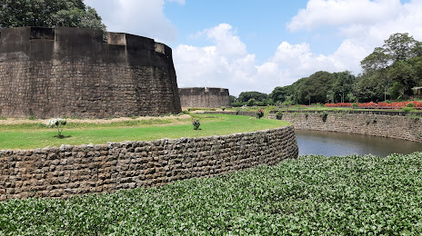
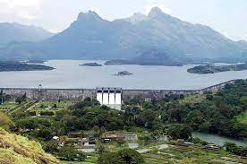
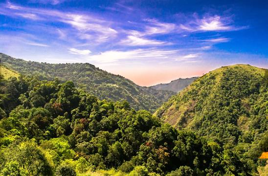
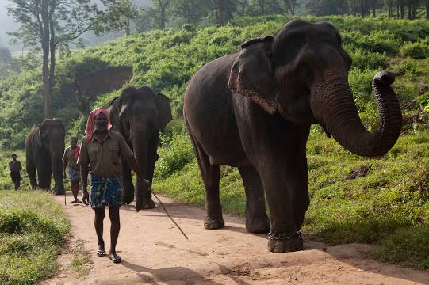
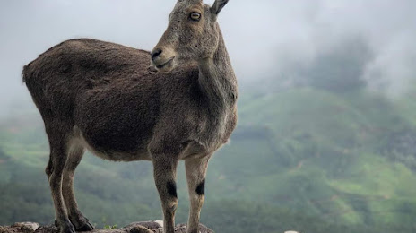

TOP DESTINATIONS
-

Palakkad Fort
Palakkad Fort is an old fort situated in the heart of Palakkad town of Kerala state, southern uIndia. It was recaptured and rebuilt grandly by Sultan Hyder Ali in 1766 A.D and remains one of the best-preserved forts in Kerala.
-

Malampuzha Dam
Malampuzha Garden in Palakkad district is the only rock-cut garden in South India made by Nek Chand, the renowned artist and winner of the prestigious Padmashree Award. The entire garden is made from broken pieces of bangles, tiles, used plastic cans, tins and other waste materials. Also situated in the gardens is the massive Malampuzha Yakshi (female vampire) built in 1969 by Kanayi Kunhiraman, a greatly respected sculptor from the state. It is a spectacular relic of art that we are lucky to still have with us. The flowering beds, fountains and rose gardens along with an aerial ropeway make it a place that instantly soothes your soul.
-

Silent Valley
Silent Valley National Park is a national park in Kerala, India. It is located in the Nilgiri hills, has a core area of 89.52 km², which is surrounded by a buffer zone of 148 km². This national park has some rare species of flora and fauna. This area was explored in 1847 by the botanist Robert Wight. It is located in the border of Mannarkkad Taluk of Palakkad district, Nilambur Taluk of Malappuram district, Kerala, and Nilgiris district of Tamil Nadu. It is located in the rich biodiversity of Nilgiri Biosphere Reserve. Karimpuzha Wildlife Sanctuary, New Amarambalam Reserved Forest, and Nedumkayam Rainforest in Nilambur Taluk of Malappuram district, Attappadi Reserved Forest in Mannarkkad Taluk of Palakkad district, and Mukurthi National Park of Nilgiris district, are located around Silent Valley National Park. Mukurthi peak, the fifth-highest peak in South India, and Anginda peak are also located in its vicinity. Bhavani River, a tributary of Kaveri River, and Kunthipuzha River, a tributary of Bharathappuzha river, originate in the vicinity of Silent Valley. The Kadalundi River has also its origin in Silent Valley.
-

Parambikulam Tiger Reserve
Parambikulam Tiger Reserve, which also includes the erstwhile Parambikulam Wildlife Sanctuary, is a 391 square kilometres protected area in Kollengode Block, Chittur taluk in Palakkad district of Kerala state, South India. The wildlife sanctuary, which had an area of 285 square kilometres was established in 1973. It is in the Sungam range of hills between the Anaimalai Hills and Nelliampathy Hills. Parambikulam Wildlife Sanctuary was declared as part of the Parambikulam Tiger Reserve on 19 February 2010. Including the buffer zone, the tiger reserve has a span of 643.66 km². The Western Ghats, Anamalai Sub-Cluster, including all of Parambikulam Wildlife Sanctuary, is under consideration by the UNESCO World Heritage Committee for selection as a World Heritage Site. The sanctuary is the home of four different tribes of indigenous peoples including the Kadar, Malasar, Muduvar and Mala Malasar settled in six colonies. Parambikulam Tiger Reserve implements the Participatory Forest Management Scheme.
-

Mukurthi National Park(MNP)
Mukurthi National Park is a 78.46 km² protected area located in the western corner of the Nilgiris Plateau west of Ootacamund hill station in the northwest corner of Tamil Nadu state in the Western Ghats mountain range of South India. The park was created to protect its keystone species, the Nilgiri tahr. The park is characterised by montane grasslands and shrublands interspersed with sholas in a high altitude area of high rainfall, near-freezing temperatures and high winds. It is home to an array of endangered wildlife, including royal Bengal tiger and Asian elephant, but its main mammal attraction is the Nilgiri tahr. The park was previously known as Nilgiri Tahr National Park. The park is a part of Nilgiri Biosphere Reserve, India's first International Biosphere Reserve. As part of the Western Ghats